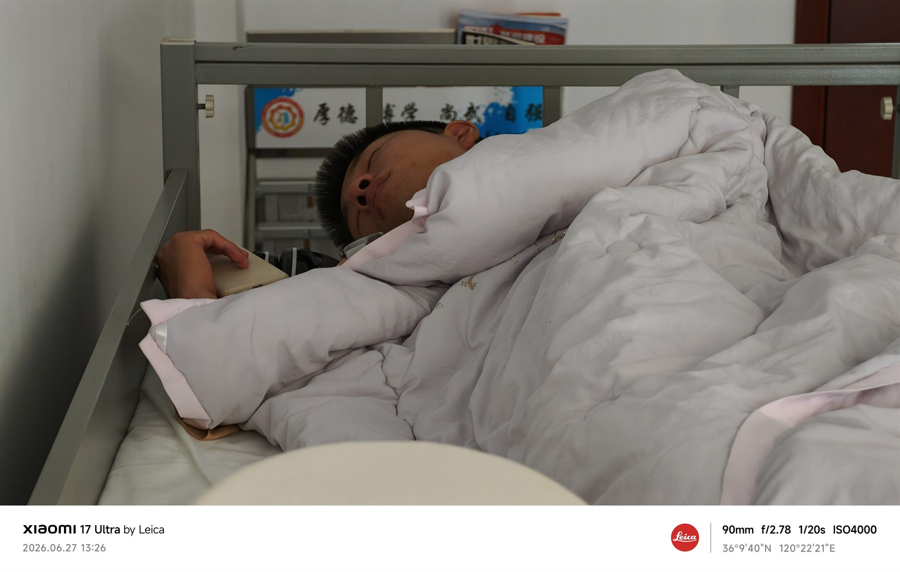
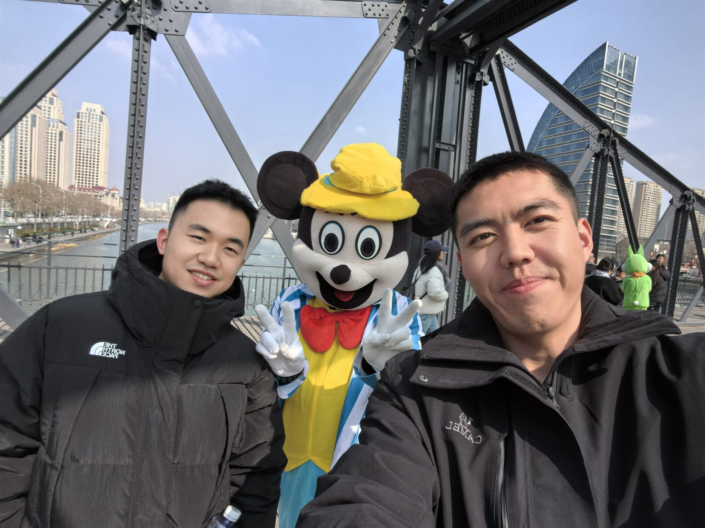
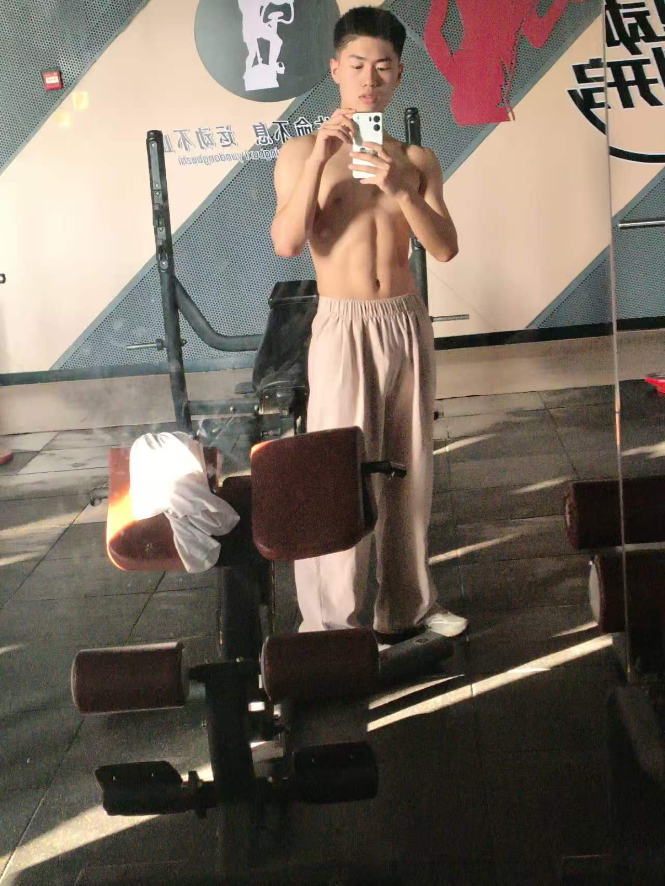
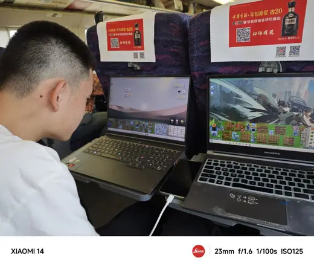

01
从宿舍出发
很多回忆不是在景点里开始的，而是在换衣服、等人、收拾包和互相催促的几分钟里开始的。
2026 · University Graduation
把散落在宿舍、校园、路上和合照里的夏天，收进一个慢慢翻看的页面。
Every Frame
相册适合快速翻看，这里把每张照片放回它的语境里。没有刻意排序成宏大的故事， 只是让宿舍、旅途、饭桌、夜晚和玩笑都能各自停留一会儿。
从此以后
那些普通到没有被认真命名的日子，后来都成了很难再复制的坐标。楼道里的脚步、临走前的合影、 半夜的聊天、毕业季突然变亮的天空，都在这里停一下。
Timeline
01
很多回忆不是在景点里开始的，而是在换衣服、等人、收拾包和互相催促的几分钟里开始的。
02
城市、校园、饭桌和夜路把人推到一起。那些随手拍下来的脸，后来反而最像真实的大学。
03
毕业照、截图、梗图和最后一觉混在一起，形成一个不太整齐、但很完整的告别。

毕业不是一个瞬间，更像某个上午醒来时发现，熟悉的床、桌子和窗外的声音，已经开始变成过去。

路过的桥、遇见的人、随手拍下的表情，后来会比具体地点更清楚。很多故事，就是从一起出门开始的。

合影把时间压成一张纸。看起来只是站了一会儿，其实身后已经排好了四年的早八、晚归和下一程。

Album
Afterglow
有些画面很正式，有些只是聊天截图、表情包或普通夜路。正因为它们不统一，才像真正发生过的四年： 认真、放松、好笑、疲惫，也明亮。
写在毕业后的夏天
大学结束得很快，快到很多话还没认真说完。但照片会替我们留住一部分：留住并肩站过的楼前， 留住迟迟不肯散场的晚上，也留住那些没有被安排却刚好发生的快乐。